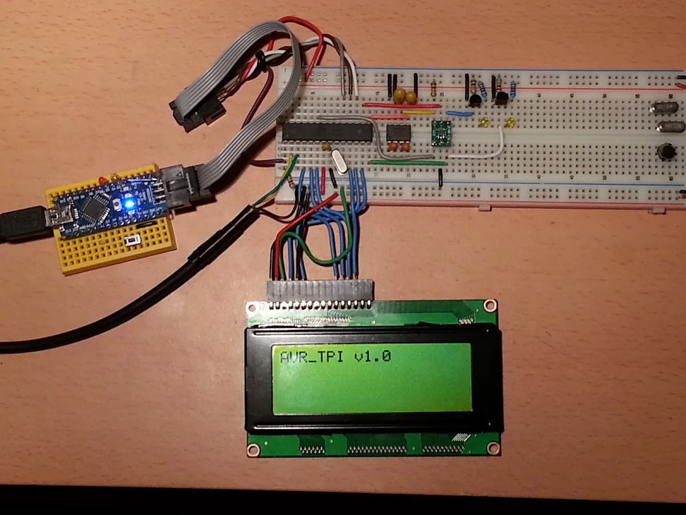

The AVR TPI Programmer
Programming the smallest AVR microcontrollers
When I began experimenting with the ATtiny10, I needed a way to program it. This little six-pin processor uses the Tiny Programming Interface (TPI), rather than the conventional AVR in-system programming interface. I decided to build my own programmers, exploring several ways to communicate with these small processors.
The Original Breadboard Programmer
The original AVR_TPI version was built on a breadboard with a standalone ATmega328P and an LCD to display programming status. The photograph below shows two programmers at work. The Arduino Nano on the small yellow breadboard was used to load the firmware into the ATmega328P on the larger breadboard. The ATmega328P, in turn, was the TPI programmer for the little ATtiny10 on its adapter board.

Communicating with AVRDUDE
Rather than writing a new host application, I retained the AVR910-style serial protocol. The programmer translates commands from AVRDUDE into TPI operations. The later source includes automatic target identification from the device signature, chip erase, flash reads and writes, and access to fuse and lock bits. Its device table covers the ATtiny4, ATtiny5, ATtiny9 and ATtiny10.
A Native USB Programmer
Another approach I explored in 2013 was to eliminate the separate USB-to-serial interface. The USB_TPI project used an AT90USB162 and Dean Camera's LUFA library to provide a native USB virtual serial port. The source also made provision for the ATmega32U4. Timer interrupts and ring buffers handled TPI communications.
The recovered project includes the firmware, USB descriptors, an EAGLE schematic and an original photograph. This was a separate implementation from the ATmega328P breadboard programmer shown above.
An Arduino Sketch
In June 2014 I also experimented with an Arduino sketch called ArduinoTPI, based on ArduinoISP. This approach used the Arduino software framework and STK500-style host communications rather than the AVR910 protocol. The sketch survives in the archive, although I have not established whether this version was completed and tested.
The Arduino Uno Version
In March 2016 I adapted the original AVR_TPI breadboard programmer for the Arduino Uno. Much of the original program remained intact, with changes primarily to the pin assignments and TPI communications. The firmware remained native AVR C, compiled with AVR-GCC rather than the Arduino IDE. Version 1.1 used hardware SPI for TPI communications and added ready and error LEDs, a pushbutton and control of the Uno's automatic reset.
TPI transfers use a 12-bit frame containing a start bit, eight data bits, parity and two stop bits. The later programmer uses two eight-bit SPI transfers to transmit a frame, with additional idle bits. The receive routine aligns incoming data across SPI bytes. The SPI framing routines in the published source credit the ATtiny10 resources at Junk Plus Arduino.
High-voltage programming is also supported by the firmware through control of an external 12 V reset supply, which can be generated from the USB 5 V supply using a MAX662 charge pump. This permits programming devices whose reset function has been disabled. The 12 V supply must be switched with suitable external circuitry; it must not be connected directly to an Uno I/O pin.
The pushbutton controls the reset-capacitor connection so that the Uno can be updated through its bootloader when desired, without automatically resetting each time AVRDUDE opens the serial port to program a target. The optional LCD support was retained.
A Practical Application
One application of the programmer was my ATtiny10 electronic candle. I made a homemade five-pogo-pin programming probe that contacted pads on the candle PCB, eliminating the need for a permanent programming connector.
Source Code and Project Files
In November 2026 I rediscovered a large collection of my old AVR development files on a drive in my shop computer. Among them were the native USB programmer, the Arduino sketch and the development source for AVR_TPI v1.1, along with the published UNO_TPI version. Although the original v1.0 revision has not been recovered separately, the program itself survives in its later version.
The download brings these implementations together with the supporting libNoter and libnerdkits libraries, original Makefiles, AVRDUDE configuration, ATtiny10 test programs, historical source revisions, compiled firmware, schematic and photographs. The USB_TPI makefile references LUFA-120730; the archive includes LUFA-130901 as a possible substitute. Its compatibility has not been tested.
The Uno Makefile targets the ATmega328P at 16 MHz, with serial communication at 115200 baud. It enables the optional LCD by default. The commands make and make flash build and upload the programmer firmware respectively, using AVRDUDE and the Arduino bootloader for the upload. Review paths, serial ports and other build settings before use. The recovered firmware has not been rebuilt or tested for this article.
Download the recovered TPI programmer project archive (14.2 MB)